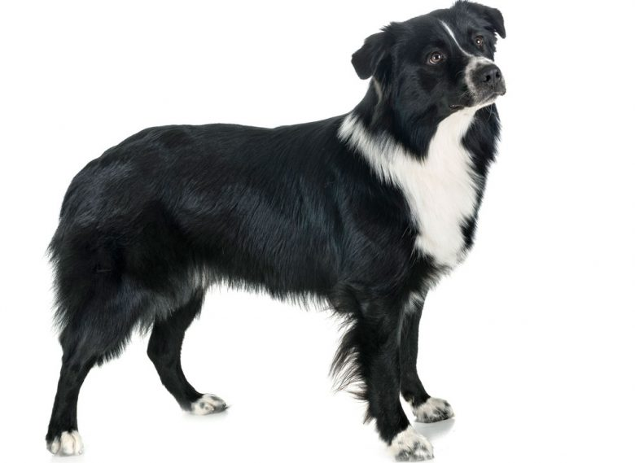

Types of aussies

Black and white colored australian shepherd.
Red Merle colored
Black tricolored
Blue Merle colored
Australian shepherds are considered to be a ranch dog, and is a herding dog for cowboys. This page is to provide people with the information they might need before adopting one.
Black and white colored australian shepherd.
Red Merle colored
Black tricolored
Blue Merle colored
"Australian shepherds are great to have as pets but you have to keep them active otherwise they get anxious and act out."
--Anonymous Pet Smart VetSign up now to stay up on all australian shephered news and available adoptions.